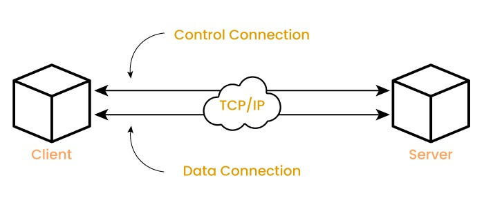

Welcome to the Internet:
File Transfer
What is file transfer?
File transfer is the process of moving or copying files over the internet, usually between two computers. It usually works by transferring files between a client and a server.
How does file transfer work?
The three main protocols used for file transfer are FTP (File Transfer Protocol), SFTP (Secure File Transfer Protocol), and FTPS (File Transfer Protocol Secure).FTP is one of the oldest internet protocols. It is a simple system that transfers files at fast speeds and can be used for both plain text and binary files. It has two separate channels for control and data transfer. It uses usernames and passwords for authentication.
FTPS is very similar to FTP and functions the same way, but it uses SSL/TLS (Secure Sockets Layer/Transport Layer Security) for an added layer of security. It can be used to send sensitive information that might be at risk with FTP. Usernames and passwords are also encrypted.
SFTP is different from the other two. It is packet-based, not text-based. Unlike the other two, it uses a single connection instead of two channels and ports. It is also encrypted, but using SSH (Secure Shell).

An image of how FTP works.